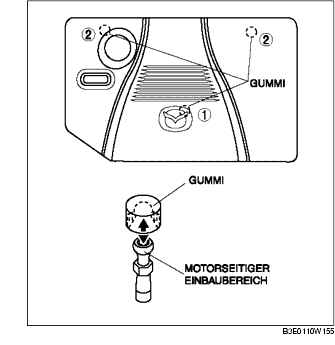

ABDECKPLATTE AUSBAUEN/EINBAUEN [LF]
B3E011000149W01
1. Die Abdeckplatte in der abgebildeten Reihenfolge entfernen.
-
Hinweis
-
• Die Abdeckplatte abheben und wie abgebildet von den Montagebereichen lösen.

2. Die Abdeckplatte in umgekehrter Reihenfolge des Ausbaus einbauen.